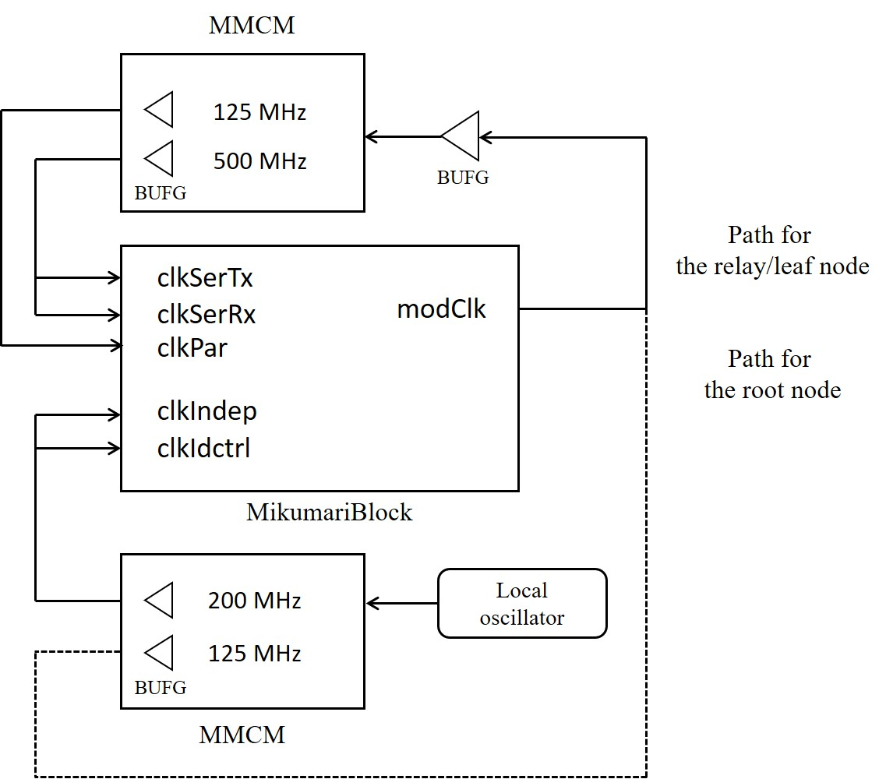
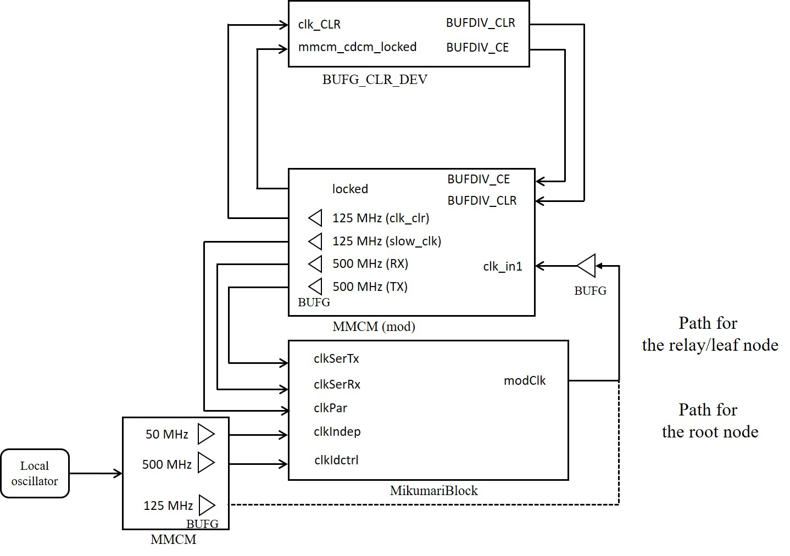
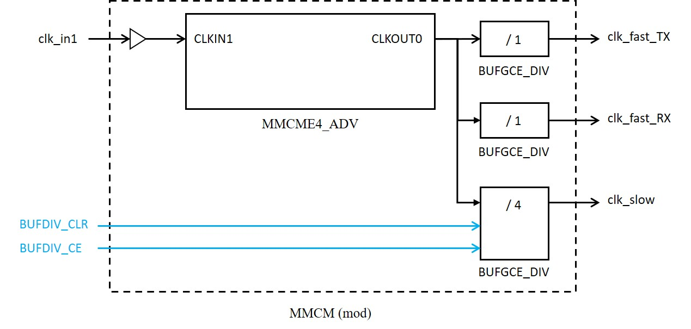
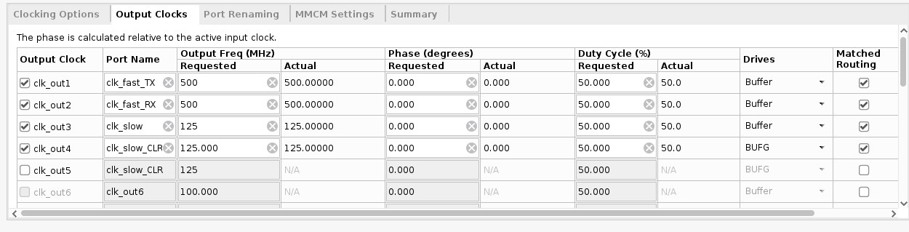
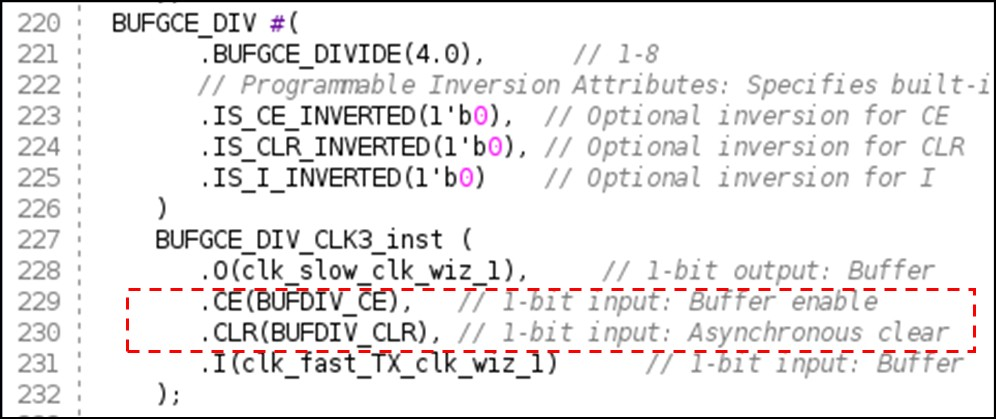
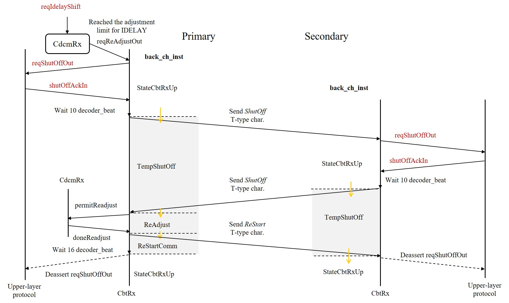

Practical Usage
MikumariBlock
The MikumariBlock is a wrapper module including the CbtLane and the MikumariLane. The intermediate signals between the CBT and the MIKUMARI link are hidden. For users, the author recommends to use the MikumariBlock. The almost all MikumariBlock entity ports are directly connected to the CBT and the MikumariLane entity ports. The reset asynchronous is available, finally input to the MikumariBlock is .
Clock Configuration
This section provides an example of using the MIKUMARI modulated clock with a frequency of 125 MHz and the CDCM-8-XX modulation pattern.
7-series FPGAs
The figure shows an example of a clock configuration for a 7-series 7 FPGA. This example uses an MMCM for clock recovery, but the MMCM can also be replaced with an external PLL. The example shown assumes that the reference clock frequency transmitted via the MIKUMARI link is 125 MHz. clkidctrl must be set to 200 MHz. Do not select a clkIndep frequency that is an integer multiple (including 1) of clkPar. In the 7-series, clkSerTx and Rx can be clocked from the same source.
The MMCM includes a function to align the phases of the input and output clocks. As a result, clkPar can be obtained with a deterministic phase relationship relative to the modulated clock input (modClk). Because of this characteristic, MMCMs generated from the IP catalog can be applied directly to 7-series FPGAs.

UlstraScale FPGAs
With UltraScale FPGAs, using an MMCM generated from the IP catalog as-is does not minimize skew between multiple clock signals; therefore, a more complex clock configuration than that used with 7-series FPGAs is required. For details, refer to Xilinx AR# 67885.
The recommended clock configuration is shown in the figure. MMCM(mod) is a modified version of the MMCM generated from the IP catalog and has the internal structure shown in the figure. In other words, clkPar, clkSerTx, and clkSerRX all originate from the same clock output, and clkPar is generated by dividing clkSer using BUFGCE_DIV. While this configuration minimizes skew between clocks, it introduces phase indeterminacy into clkPar due to the division process. Therefore, a clock signal phase-synchronized with the input modulation clock is generated separately (clk_clr), and this clock is used to perform a synchronous reset of the divider counter, thereby obtaining a clkPar that is phase-synchronized with the input. These modified MMCM and BUFG_CLR_DEV files are included in the support directory.
Because the modified MMCM are used, constraints that automatically assigned by IP (such as CLOCK_DELAY_GROUP via Matched Routing) do not apply. Manually add the following constraint to the project's XDC:
create_generated_clock -name clk_fast [get_pins u_MMCM_CDCM/inst/mmcme4_adv_inst/CLKOUT0]
create_generated_clock -name clk_slow_CLR [get_pins u_MMCM_CDCM/inst/mmcme4_adv_inst/CLKOUT3]
create_generated_clock -name clk_slow [get_pins u_MMCM_CDCM/inst/BUFGCE_DIV_CLK3_inst/O]
set_property CLOCK_DELAY_GROUP group_mmcm_cdcm_second [get_nets u_MMCM_CDCM/inst/clk_fast_TX]
set_property CLOCK_DELAY_GROUP group_mmcm_cdcm_second [get_nets u_MMCM_CDCM/inst/clk_fast_RX]
set_property CLOCK_DELAY_GROUP group_mmcm_cdcm_second [get_nets u_MMCM_CDCM/inst/clk_slow]


Method for Producing Modified MMCM
- Generate MMCM from IP catalog: Check the Optimize Clocking Structure box on the Clocking Options page, and set output clocks as shown in the figure. Set
clk_slow_CLRto the same values as clk_slow (125 MHz, phase 0°). However, the actual phase ofclk_slowis not determined until the CLR described below is applied. Set onlyclk_slow_CLRtoBUFG; set the other three signals toBuffer. Check the Matched Routing box for all four signals. Additionally, since changing the order will alter the generated circuit, configure the four signals in the order shown in the figure.

- Editing the Output Codes: Copy the two files generated by the IP (the wrapper file
<IP name>.vand the main file<IP name>_clk_wiz.v), save them under different filenames, and use the edited code. AlthoughCEandCLRare originally connected to fixed values, connectBUFDIV_CEandBUFDIV_CLRto them, respectively. Also, add the input ports forBUFDIV_CEandBUFDIV_CLRto both files.

Dynamic Re-alignment of Clock and Data Phases
When using long optical fibers-typically around 1 km-it is necessary to address phase shifts between the clock and data caused by changes in ambient temperature. In the primary node of MIKUMARI link, the modulated clock signal returned from the secondary node is sampled using the primary node's own transmission clock. In this process, the phase between the clock and data is affected by changes in transmission delay caused by the fiber's expansion and contraction. In such use cases, the MIKUMARI link's upper-layer protocol must measure the phase between the clock and data, and if the variation exceeds a certain threshold, the IDELAY tap value must be readjusted. If the system is operated without readjustment, data sampling becomes unstable as the phase variation approaches the unit interval, eventually causing the link to go down. The temperature coefficient of SMF-28, a common optical fiber material, is 35 ps/km/K [1]. Based on this value and the environment in which you plan to use MIKUMARI link, please determine whether a readjustment mechanism is necessary.
[1] Slavík, R., et al., Sci Rep 5, 15447 (2015).
The current MIKUMARI link protocol provides the following signal ports for dynamic readjustment of the phase relationship:
reqIdelayShift: A signal received from the upper-layer protocol to shift the IDELAY tap value by ±1. Entering "01" or "10" allows the tap value to be dynamically increased or decreased. This input must be a one-shot relative toclkPar.reqShutOffOut: This signal indicates that communication must be temporarily halted to perform a readjustment involving a change in bit positions whenIDELAYis about to exceed its adjustable range. This request is a signal sent by the MIKUMARI link to the upper-layer protocol.shutOffAckIn: An input signal indicating that the upper-layer protocol has received a request from the link and has temporarily halted data communication.
The figure below shows a flowchart of the procedures for ensuring stable communication during long-distance transmission using these signals.
First, prepare some upper-layer protocol for measuring phase variations. For example, the use of a DDMTD-based ClockPhaseAnalyzer can be considered.
The upper-layer protocol drives the reqIdelayShift signal as appropriate to adjust the tap values according to the phase variation. For example, when using IDELAYE2, this signal must be driven every 78 ps. At this time, it is strongly recommended to introduce hysteresis. When reqIdelayShift is received, the CBT adjusts the IDELAY settings immediately without halting the data communication.

After issuing reqIdelayShift multiple times, if the phase deviation appears likely to exceed the range adjustable by IDELAY, the CBT issues reqShutOffOut. This signal indicates that the CBT wishes to realign the phase relationship, which involves changing bit positions. Since this process may corrupt data, communication must be temporarily halted to perform the realignment. When this signal becomes 1, the upper-layer protocol stops data communication at an appropriate time and then returns shutOffAckIn. This procedure must also be performed on the secondary node side. When the CBT completes the phase realignment, reqShutOffOut returns to 0. At that point, the upper-layer protocol resets shutOffAckIn to 0 and resumes communication.
This procedure is completed within 1 ms. The decision regarding when to halt communication after reqShutOffOut becomes 1 is left entirely to the upper-layer protocol. Since phase variations due to temperature changes are assumed to be gradual, there should be ample time to respond.